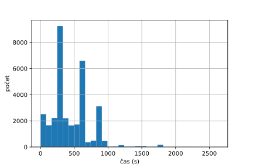
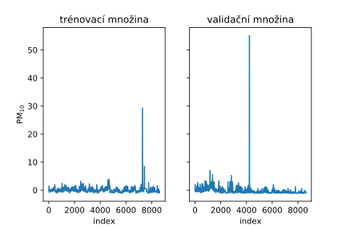

Detekce anomálií v datech o znečištění ovzduší
Chytré lampy na Karlínském náměstí poskytují data o znečištění ovzduší. V této práci v nich detekujeme anomálie v polétavém prachu.
Explorace data
Pražská datová platforma Golemio poskytuje data z pilotního provozu Senzorické sítě veřejného osvětlení, v rámci kterého bylo nainstalováno 92 chytrých pouličních LED lamp v blízkosti Karlínského náměstí na Praze 8. Některé z těchto lamp mají senzory pro měření a sběr dat o hluku, prašnosti a množství dalších polutantů. Výška senzorů je přibližně 4,5 metrů nad zemí.
Pevné částice.
Datové zdroje
V katalogu datové platformy Golemio jsou k dispozici dva datové CSV soubory: jeden za druhé pololetí roku 2018 a druhý za zatím uplynulou část prvního pololetí roku 2019. Data z druhé poloviny obsahují celkem 473529 záznamů z toho jsou ale dostupné odečty PM10 pouze v 129807 případech. V soubory z roku 2019 je zatím celkem 226672 záznamů a z toho 62518 měření PM10.
Každý záznam se skládá z následujích atributů:
| atribut |
popis |
jednotka |
| sid |
identifikátor stanice |
|
| starttimestamp |
datum a čas měření |
|
| o3 |
O3 (ozon) |
ppb |
| no2 |
NO2 (oxid dusičitý) |
ppb |
| so2 |
SO2 (oxid siřičitý) |
ppb |
| pm10 |
pevné částice PM10 |
µg m-3 |
| pm2p5 |
pevné částice PM2,5 |
µg m-3 |
| geocoordinates_latitude |
zeměpisná šířka stanice |
|
| geocoordinates_longitude |
zeměpisná délka stanice |
|
kde ppb znamená parts per bilion. Datová sada by měla obsahovat odečty z 43 senzorů, které jsou rozmístěny na vybraných lampách, ale ve skutečnosti jsou k dispozici data pouze z 22 senzorů.
Ze 22 senzorů měří podle dostupných dat polétavý prach PM10 pouze 6 senzorů z nich nejvíce měření má stanice s identifikátorem: y7e4onsytkb3ydonflz5kcbcigkh5ulo.
Trénovací a testovací data
Vezmeme-li si pouze data z této lampy a ponecháme si atributy o3, pm2p5, no2, so2 a pm10, tak dostaneme data dimenze 5, kterí obsahují 32872 záznamů v roce 2018 a 12709 záznamů v roce 2019, a to je dohromady 45581 záznamů za oba roky. Protože pracujeme s časovou řadou jako index zachováme datum a čas měření tedy starttimestamp.
Dále se přímo nabízí rozdělit data na trénovací a testovací množinu podle roku měření tj. podle souborů. Takové rozdělení má 72,1% dat v trénovací množině a 27,9% dat v množině testovací.
Vizualizace
Základní vizualizace časové řady ukazuje, že v datech o polétavém prachu opravdu nějaké anomálie jsou. Dále je vidět, že data na první pohled neobsahují žádné známky sezóního chování.
 TODO: TODO.
TODO: TODO.
Boxplot ukazuje že z hlediska absolutní velikosti hodnoty PM10 mnoho bodů vybočuje od průměru 14.093698, který má relativně malou standarní odchylku 18.931824. Samozřejmě všechny tyto body nemusí být anomálie, protože naše detekce je časově závislá a záleží na předchozích měřeních.
 TODO: TODO.
TODO: TODO.
Jistou lineární závislost naznačuje tak zvaný lag plot, který zobrazuje závíslost měření na měřením předchozím, body se totiž shormaždují na diagonále. I zde je vidět zhruba 6 anomálních měření, která leží mimo diagonálu.
 TODO: TODO.
TODO: TODO.
Poslední vizualizační pomůckou, kterou prozkoumáváme data je korelační graf. Zajímá nás především korelace příznaku pm10 s ostaními. Za povšimnutí stojí, že anomálie PM10 se vyskutují pouze pokud je nízká hladina SO2 a O3.
 TODO: TODO.
TODO: TODO.
Každopádně tento vztah zřejmě není lineární, protože korelační koeficient je v obou případech blízký nule (0.028117 resp. -0.067698) v porovnání s největším korelační koeficient, který má s příznakem pm2p5, a to 0.530632. Z korelačního grafu PM10 a PM2,5 je ale vidět, že nekteré anomáli nastávají jak při zvyšené hladině PM2,5 tak při jejím normálním stavu.
Rozdíl časů odečtů
Podle specifikace je vyčítací frekvence 15 minut z brány do platformy. Naše data takovéto pravidelné intervaly neobsahují. Průměrně je dostupné nové měření asi každých 7 minut a 52 sekund se standarní odchylkou zhruba 18 minut a 20 sekund.
Zřejmé výpadky ale mohou systém odstavit i na delší dobu. V našich datech je nejdelší prodleva přes 1 den a 15 hodin.

TODO: TODO.
Log–log plot
Poslední vizualizační pomůckou, která nám pomůže nahlédnou do dat z hlediska jejich absolutní velikosti je tzv. log–log graf. Především v jeho pravé dolní části je vidět, že data obsahují něktré abnormálně velké hodnoty a bude úkolem námi naučených klasifikátorů tyto hodnoty najít i vzhledem k časové závislosti na bodech předchozích.
TODO: TODO.
Předzpracování
Původní data tedy nejsou samplovány v rovnoměrných intervalech, a proto je v rámci předzpracování přesamplujeme na každých 15 minut, což je vyčítací frekvence z platformy a k doplnění chybějících hodnot použijeme metodu *fill forward*, která doplní vždy předchozí hodnotu.
Data musí přetransformovat do podoby vhodné pro předpovídání časových řad, abychom potom mohli detekovat anomálie. To znamená že z měření v čase \(t\) se budeme snažit předpovědět hodnotu pm10 v čase \(t + 1\).
Poté data rozdělíme na trénovací a validační množinu. Validační množina nám poslouží k výběru modelu a jeho hyperparametrů. Konzervativně jsem se rozhodnul, že data rozdělím na půlky tak, aby odhad byl co nejpřesnější.

TODO: TODO.
Nakonec aby různé příznaky byly zhruba stejných rozsahů použijeme standadrní škálování, takže každý příznak má trénovací množiny bude mít nulový průměr a jenotkovou standardní odchylku. Takto předzpracovaná data nám umožní i správnou selekci příznaků pomocí linearní regrese s L1 regularizací.
Selekce příznaků
Selekce podmnožiny příznaků může být důležitá například pro snížení komunikační zátěže. Vhodné příznaky pro linearní modely můžeme vybrat napříkad pomocí linearní regrese s L1 regularizací (Lasso). Ta totiž koeficienty u nevhodný příznaků drží blízko nule.
Z výše zmíněných důvodů jsem zkusil natrénovat Lasso pro 23 různých hodnot regularizačního parametru na logaritmické škále mezi 10-10 a 101. Výsledné grafy jasně ukazují, že důležitý je pouze příznak pm10, protože ostatní jsou blízké nule, pokud jekvadratická odmocnina ze střední kvadratická odchylka nízká. Pro testované lineární modely stačí tedy uvažovat pouze tento příznak.
 TODO: TODO.
TODO: TODO.
Porovnání modelů
Při detekování anomálií v časových řadách se používá metoda, kdy je daná řada předpověděna dopředu (například pomocí rekurentní neuronové sítě) a následně je porovnána se skutečnými daty z nehož jsou určeny anomálie (například pomocí váhování). Tímto přístupem se zabývá článek Time Series Anomaly Detection. Dalším vhodným materiálem k prostudování je přehled algoritmů na detekci anomálií Anomaly Detection: A Survey.
Protože data neobsahují žádná označení dřívějších anomalií, je třeba použít strojové učení bez učitele
Problém je definovám tak, že předpovíme pomocí nějakého algoritmu strojové učení následují hodnotu, která by měla následovat po jich zaznamenaných měření. Předpovězenou hodnotu potom porovnáme s naměřenou hodnotou a pokud se tyto hodnoty nepřirozeně liší, tak měření označíme jako anomálii.
Jako vhodné algoritmy jsem zvolil tři základní:
- základní model, který předpokládá že následující hodnota měření bude stejná jako přechozí,
- lineární regresní model a
- rekurentní neuronovou síť (konkrétně dnes nejpopulárnější Long Short-Term Memory).
Metrika úspěšnosti
Pro měření úspěšnosti predikce časové řady se jako vhodná zdá střední kvadratická chyba (mean squared error, MSE), kterou model minimalizuje, ale není žádoucí dosáhnout nulové chyby, protože potom by nebylo možné detekovat anomálie. Tzn. model by se měl naučit pouze pravidelnosti v datech a nikoliv se přeučit tak, aby si dokázal zapamatova anomálie.
V měření úspěšnosti detekce anomálií je problém absence označení anomálií v datech. Detekce tedy musí být kontrolovány člověkem. Je možné dělat různé statistické odhady úspěšnosti (např. odhad matice záměň), ang. confusion matrix, precision, recall, PR curve nebo F-score).
Abych mohl modely mezi sebou porovnávat je potřeba zvolit nějakou metriku. Pro regresní problémy je nejpřirozenější odmocnina ze střední kvadratické chyby:
\(\mathrm{RMSE} = \sqrt{\frac{1}{N} \sum^{N}_{i = 1}(\hat{y_i} - y_i)^2},\)
kde \(N\) je počet měření, \(\hat{y_i}\) je predikce modelu a \(y_i\) je skutečně naměřená hodnota.
Základní model
Základní model nám poskytny odrazový můstek, ke kterému budeme moci vztahovat výsledky ostatních modelů. Navíc je jednoduchý na implementaci a dosahuje výsledku vypsaného níže.
Linearní regrese
Druhým modelem je linearní regrese a nyní už bez regularizace, protože nám zůstal pouze jeden příznak. Pokud necháme tento model předpovídat pouze z bezprostředně předcházející hodnoty dostaneme RMSE viz níže.
Můžeme ale také nechat linearní regresi předpovídat z hodnot větší historie. Graf níže ukazuje výsledek pro velikosti hisotrie 1 až 100. Jako nejlepší se ukazuje velikost historie hodnoty 2, kde je RMSE rovna 0.63797. Následně se RMSE zhorší a poté konverguje k hodnotě zhruba 0,71.
TODO: TODO.
Long Short-Term Memory (LSTM) rekurentní neuronová síť
Pokročilejší predikční model je LSTM rekurentní neuronová síť. Úvod do rekurentních sítí: The Unreasonable Effectiveness of Recurrent Neural Networks.
Poslední a nejkomplexnější model je LSTM, který dokáže zachytit i nelineární vztahy v datech, a proto vstupu tohoto modelu všechny příznaky.
Jako architekturu jsou zvolil jednovrstvout rekuretní síť s velikostí skrytého stavu 64. Výstupem ale musí být pouze jedno číslo které predikuje měření PM10. Proto je na vlastní buňce LSTM ještě linearní vrstva, která produkuje onu jednu výstupní hodnotu.
Co se týče trénování, LSTM jsem trénoval na sekvencích délky 100 a celkem 50 epoch. Výsledné RMSE na validační setu viz níže.
TODO: TODO.
Výsledky
Níže jsou porovnány RMSE všech čtyř různých přístupů k předpovědi časové řady na validačním setu a jako nejlepší možnost se tedy jeví lineární regrese.
Detekce anomálií
TODO: TODO.
TODO: TODO.
Testování
 TODO: TODO.
TODO: TODO.
 TODO: TODO.
TODO: TODO.
TODO: TODO.
TODO: TODO.
Závěr